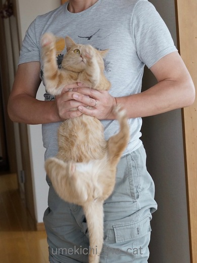
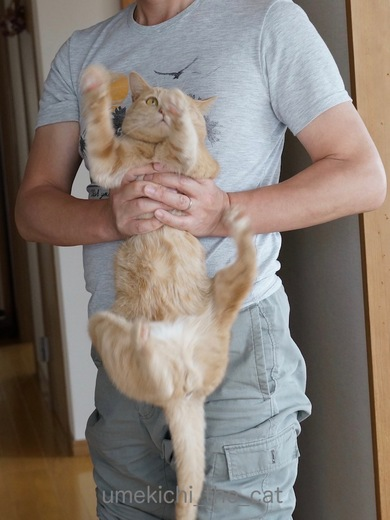

シャンプーは無言で [梅吉]
連休中に暖かい日を選んで梅吉をシャンプーしました。

![[猫]](https://blog.ss-blog.jp/_images_e/101.gif) わぁ〜〜〜っ！むっちゃいやなよかんや〜〜！！
わぁ〜〜〜っ！むっちゃいやなよかんや〜〜！！
身に降りかかる事態を察知してジタバタする梅吉さん。
換毛期の抜け毛をスッキリさせるんですよ。
シャンプー係はおとーさん。おかーさんはサポートと撮影係。
まずはシャワーでよ〜く湿らせます。
（すね毛の足が大写しでスミマセン・・・・(⌒-⌒; )
あちこち動き回りますが必死で逃げようとしたりギャン鳴きしたりはしません。
この間、無言。
あわあわですよ〜。
そして無言。
あちとおちりを洗いますよ。
やっぱり無言。
無言。無言。
二人掛かりでよ〜くすすいで終了。
徹頭徹尾無言。
短毛のせいかシャンプーしても見た目の激変はありません。
わりと筋肉質だよねー。
梅吉を追いかけまわしてタオルドライ。
シャンプー後は5秒と同じところにとどまらずあちこち動き回って挙動不審な梅吉。
必死で体を舐めていたのに突然爪とぎ、必死で舐める、出窓に乗る、舐める、水飲み、走る・・・
行動が怪し過ぎますww
あまりに動き回るのでドライヤーをかけるのも無理でした。
１時間半くらいですっかり乾いてふかふかシルキーな手触りに![[ぴかぴか（新しい）]](https://blog.ss-blog.jp/_images_e/150.gif)
つかれて肉球を投げ出してねちゃいました(≧▽≦)
ご飯が欲しい時、構って欲しい時は大声で「わぁ〜ん、うわぁ〜ん！！」と
アピールするのですがシャンプーの時は終始無言。
「もうさわいでもあきまへんわ・・・」とあきらめムードなのでしょうか。
 ↑ガブッと一押し↑
↑ガブッと一押し↑
体も乾いてようやく落ち着きを取り戻したと思ったら部屋の隅に怪しい物体。
形状からするとうんP・・・・
でもとっても白っぽい。
なんと、かりんとうみたいな形をした毛玉（毛棒？）のゲーでした(｣ﾟﾛﾟ)｣
食道の形そのまま！！
必死の毛づくろいで大量に口に入った毛を吐き出したようです。
食道に詰まったままだったら・・・ゲーして良かった〜。
本にゃんもすっきりしたのかいつものように「わぁ〜ん、うわぁ〜ん！！」と
大声でご飯をおねだりしてあっという間にたいらげていました。
梅吉、丈夫な子＾＾

身に降りかかる事態を察知してジタバタする梅吉さん。
換毛期の抜け毛をスッキリさせるんですよ。
シャンプー係はおとーさん。おかーさんはサポートと撮影係。
まずはシャワーでよ〜く湿らせます。
（すね毛の足が大写しでスミマセン・・・・(⌒-⌒; )
あちこち動き回りますが必死で逃げようとしたりギャン鳴きしたりはしません。
この間、無言。
あわあわですよ〜。
そして無言。
あちとおちりを洗いますよ。
やっぱり無言。
無言。無言。
二人掛かりでよ〜くすすいで終了。
徹頭徹尾無言。
短毛のせいかシャンプーしても見た目の激変はありません。
わりと筋肉質だよねー。
梅吉を追いかけまわしてタオルドライ。
シャンプー後は5秒と同じところにとどまらずあちこち動き回って挙動不審な梅吉。
必死で体を舐めていたのに突然爪とぎ、必死で舐める、出窓に乗る、舐める、水飲み、走る・・・
行動が怪し過ぎますww
あまりに動き回るのでドライヤーをかけるのも無理でした。
１時間半くらいですっかり乾いてふかふかシルキーな手触りに
つかれて肉球を投げ出してねちゃいました(≧▽≦)
ご飯が欲しい時、構って欲しい時は大声で「わぁ〜ん、うわぁ〜ん！！」と
アピールするのですがシャンプーの時は終始無言。
「もうさわいでもあきまへんわ・・・」とあきらめムードなのでしょうか。
体も乾いてようやく落ち着きを取り戻したと思ったら部屋の隅に怪しい物体。
形状からするとうんP・・・・
でもとっても白っぽい。
なんと、かりんとうみたいな形をした毛玉（毛棒？）のゲーでした(｣ﾟﾛﾟ)｣
食道の形そのまま！！
必死の毛づくろいで大量に口に入った毛を吐き出したようです。
食道に詰まったままだったら・・・ゲーして良かった〜。
本にゃんもすっきりしたのかいつものように「わぁ〜ん、うわぁ〜ん！！」と
大声でご飯をおねだりしてあっという間にたいらげていました。
梅吉、丈夫な子＾＾

カフェオレ色の梅吉

梅吉 2023年8月10日 永眠


梅吉と出会った譲渡会

犬猫の理由なき殺処分ゼロ
妄想広告
UMEKICHI 光

爆発的に早い！
時々攻撃的！
Thanks to Mr.Boss365
爆発的に早い！
時々攻撃的！
Thanks to Mr.Boss365

梅吉さん、エライ目にあったねえ〜＾＾
by じゅらまろ (2017-05-08 14:29)
梅吉君も無言タイプなのですね(笑)
あおもだよー。お風呂の中でぐるぐる歩き回るだけｗｗ
毛玉も吐いたらスッキリだね！
そうそう。食道のかたちのまま出ますよねｗ
梅吉君、おつかれさま♪
by リュカ (2017-05-08 16:30)
必死の形相からの無言（笑
男は黙って耐えるのですね(#^.^#)
by きぃ (2017-05-08 16:33)
おとーさんお腹も出てなくてカッコイイんですけど⋯(関心がついそっちに)
うちの子達を洗うと殺人鬼に襲われてるような騒ぎになります。
お利口な梅吉さんを見習ってほしい。
by zombiekong (2017-05-08 17:55)
シャンプーしても、意外とスッキリしないのですよ。
なので、シャンプー前に徹底的にブラッシングしたほうがいいです。
シャンプーは、何となく薄黒くなった毛のヨゴレ取りみたいなもんで…というのが、うちのシャンプーになりつつあります。
by tama (2017-05-08 19:32)
そうそう、毛玉というから丸いのかと思っていたので、初めて見たときはうんＰを吐いたと思って慌てました^^;
梅吉さん、いい子だな～♪
ウチのはご近所から虐待を疑われるのではと心配になるくらい、ものすごい断末魔の悲鳴をあげながら暴れ回ります。
洗うというより下僕が抱っこしたままお湯をかぶる・・・という感じです(-_-メ)
by ゆきち (2017-05-08 20:24)
梅吉さん、鳴かないなんて大人ですねー。^^)
長毛のうちのやつの場合、シャンプーはさんざんブラッシングした後でないと、からだじゅう毛玉だらけになってしまうので（ほとんどヒツジ。^^;）、短毛さんはお手入れがしやすいんだなあと思います。
by yes_hama (2017-05-08 20:44)
うちも同じです！無言でにゅるにゅる、お風呂場中を歩き回ります。
下僕もお風呂に入ったかのようにびしょびしょ。
タオルドライはそのままお風呂場で。
その後は毛繕いもそこそこに寝てしまいます(*^^*)
by も〜 (2017-05-08 21:51)
さすが「漢 梅吉さん」じっと黙って耐える姿が凛々しいです♪( ´▽｀)
うちは大御所以外は騒ぎまくりで、まるで虐待されてるかのよう(⌒-⌒; )
大御所は静かに怒ってシャンプー（もちろんかみさん）が終了して、私がタオルに包もうとした瞬間に暴れまくります(⌒-⌒; )
あっ、もしかして私が抱こうとするのが気に入らないのか(°_°)
by ニッキー (2017-05-09 08:14)
1枚目が笑いました～。この時からすでに面白い。
ダンスしているみたいですね。＾＾
梅吉ちゃん、鳴かないなんていい子だ～♪
by muku (2017-05-09 12:09)
梅吉くんスゴイ!!シャンプー中は無言なんだ( ﾟДﾟ)うちなんか虐待や～って通報されそうなくらいギャン鳴き王子が泣きわめきます。きなこは爪を立てて背中に登ります。いいなぁ無言のシャンプーしてみたい(>_<)
by palpal (2017-05-09 15:37)
濡れている〜（笑）
我慢の顔がいじらしいですよ。
by kiki (2017-05-09 22:39)
じゅらまろさん＞大人への通過点ですよ〜（＾◇＾）
リュカさん＞シャンプーの日はいろいろ疲れたのか
朝までぐっすりの梅吉でした。
いつもは夜中に２−３回起こされるのに！私もゆっくり眠れたー＾＾
きぃさん＞イヤなことは無言でやり過ごすタイプのようですにゃ(=ΦwΦ=)
zombiekongさん＞おっとへのお褒めの言葉ありがとうございます＾＾
「褒められてるよ！」と教えると小鼻を膨らませていましたよ〜。
メタボぎりぎり、というのはここだけの秘密でお願い致します•̀.̫•́✧
tamaさん＞そうなんですよね〜。
シャンプー後もあんまり抜け毛の量は変わりません・・・^^;
徹底的にブラシができる子だったら良いのですが
ブラシはシャンプーの100倍くらい嫌がります。
とりあえずヨゴレは取れたぞ、と満足することにしました。
ゆきちさん＞猫を飼うのは梅吉で三匹目なんですが
うんP状毛玉を見たのはこれが初めてでした！びっくりしました〜。
お風呂であばれまわるこてつくん・・・
洗った後は猫母さんの手や体が赤い線だらけになっていそうです^^;
yes_hamaさん＞ヒツジングアズ氏！Ｏ(≧▽≦)Ｏ
想像するととってもかわいいですが
毛玉をブラッシングでほぐそうとすると痛いから大変・・・
シャンプー前のブラシは必須ですね！！
by ちぃ (2017-05-10 15:47)
も〜さん＞お風呂で一緒にびしょびしょになるのは下僕の務めなのですね＾＾
王子はドライヤーOKなのかなぁ。
乾かないまま眠って風邪ひかないでねー。
ニッキーさん＞大御所様もじっと黙って耐えるのですね＾＾
ゴッドマザー様から手が移った瞬間に暴れるのは・・・
ニッキーさんが全て受け入れてくれるから、でしょう。たぶん（＾◇＾）
mukuさん＞ダンスのテーマは・・・・無駄な抵抗！ですね(^_-)-☆
palpalさん＞ギャン鳴きならまだしも爪を立てて背中に登られるのはツライ・・・
２にゃんさんとも「お風呂はんた〜い」なのね〜。
kikiさん＞はい。本にゃんなりに我慢しているようです。
でもすぐ忘れちゃう子＾＾
by ちぃ (2017-05-10 17:19)